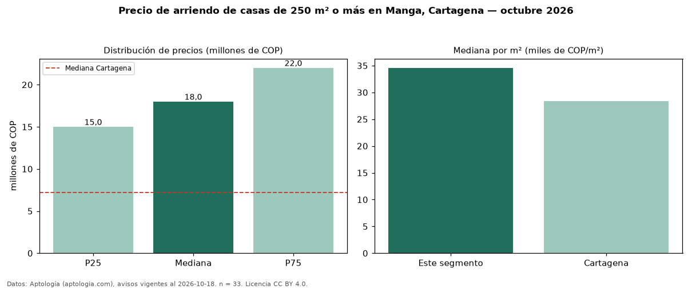

Precio de arriendo de casas de 250 m² o más en Manga, Cartagena — octubre 2026
Con 33 avisos vigentes, el canon mediano de casas de 250 m² o más en arriendo en Manga, Cartagena es COP 18 millones al mes. Frente a la mediana de todas las casas en arriendo de Manga (COP 12 millones, n = 60), queda 50 % por encima; este segmento reúne el 55 % de esos avisos. Por metro cuadrado, la mediana es COP 34.578/m² al mes (n = 33), 3 % por debajo del conjunto de referencia (COP 35.500/m²). El área mediana anunciada es 500 m². El segmento con más oferta es el de 3 o más habitaciones (28 avisos, mediana COP 18 millones). El estrato más frecuente es 5 (69 % de los avisos con estrato). La mediana de todas las casas en arriendo de Cartagena es COP 7,19 millones (+150 % de diferencia). La mitad central de los avisos va de COP 15 millones a COP 22 millones (razón 1,5), una dispersión moderada. Datos: Aptología (aptologia.com), CC BY 4.0 — https://www.aptologia.com/casas-en-arriendo/cartagena/manga. Archivos: PDF, CSV con las cifras y gráfica PNG.

| Avisos únicos | 33 |
|---|---|
| Percentil 25 | COP 15.000.000 |
| Mediana | COP 18.000.000 |
| Percentil 75 | COP 22.000.000 |
| Mediana por m² | COP 34.578 |
Fuente: avisos vigentes de portales inmobiliarios recopilados por Aptología, deduplicados (mínimo 30 avisos únicos por celda). Precios pedidos, no cerrados. Fecha: 2026-10-18.